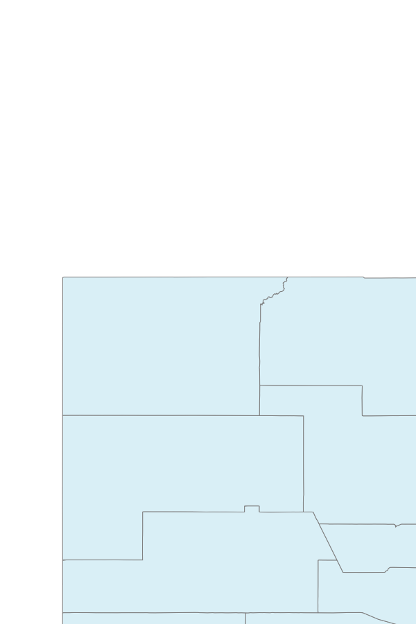

Question 1:
Given that McKinley County NM is contained within the following BBOX: -109.5, 34.5, -106.5, 36.5, what is the aspect ratio of this geographic region?
Width: -106.5 - (-109.5) = 3
Height: 36.5 - 34.5 = 2
Width / Height = 3 /2 = 1.5 The aspect ratio of this region is 1.5.
Question 2:
What would be the height (in whole pixels) for a map image for this region that is 600 pixels wide?
The height in pixels for a 600 pixel wide image at this aspect ratio is:
600 * 2/3 = 400 pixels.
Question 3:
Formulate a WMS request that reflects the values determined in 1.1 and 1.2 above for the WMS service used above in the examples. Include in your answer both the actual WMS request and the returned map image.
Question 4:
Formulate a WMS request for a 900x600 pixel map image that represents the full 3-degree width of the geographic region, and is based upon the minimum Y value of 34.5 degrees North Latitude. Include in your answer both the WMS request and the returned map image.
 Click to see full size image.
Question 5:
Given a WMS that is represented by the following GetCapabilities request, formulate individual GetMap requests using the following parameters: BBOX=-106.639,35.074,-106.609,35.094 WIDTH=600 HEIGHT=400 for each of the following layers: 0 (TNM_Large_Scale_Imagery) and 1 (1_foot_imagery) - yes - USGS just gave numbers as the layer names Link http://raster.nationalmap.gov/ArcGIS/services/TNM_Large_Scale_Imagery/ MapServer/WMSServer?request=GetCapabilities&service=WMS
answer
Question 6:
Which layers return map images that display image content (i.e. return a non-blank image)?
answer
Question 7:
Sometimes when WMS layers are accessed, there is a limit on the map scales for which the map image will be returned. If a request is submitted for a map scale that is outside the range specified for a given layer, typically, a blank map image will be returned.
From examining the information for these layers in the GetCapabilities XML document - which element in each layer’s service metadata do you think provides information about the scales for which the layer will return map images containing data?
answer
Question 8:
Which map images contain data for each of the following map image widths (remember to adjust the image height to match the BBOX of the request)
answer
{kind=link}